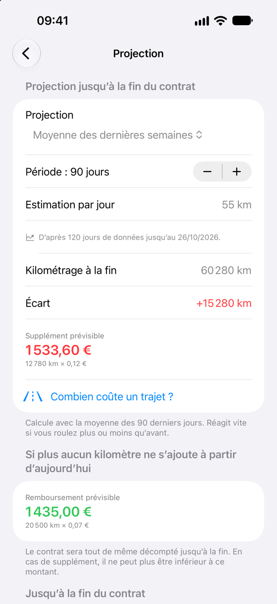

LOA, LLD : faites le point sur votre kilométrage avant la fin de l’année
Avec une LOA ou une LLD, beaucoup ne découvrent qu’à la restitution ce que coûte chaque kilomètre de trop. Un bilan en fin d’année vous montre où vous en êtes – et vous laisse le temps de corriger le tir.
Mise à jour : novembre 2026
Comment le kilométrage est décompté
En location avec option d’achat (LOA) comme en location longue durée (LLD), vous vous engagez sur un kilométrage total, par exemple 45 000 km sur trois ans. Le décompte se fait à la restitution : chaque kilomètre au-delà est facturé au tarif du contrat, généralement entre 5 et 20 centimes, parfois davantage. Les kilomètres non parcourus sont rarement remboursés.
Certains contrats prévoient une tolérance, une marge de kilomètres non facturés. En LOA, la question se pose surtout si vous rendez la voiture au lieu de lever l’option d’achat.
Pourquoi en fin d’année ?
La fin de l’année est un bon moment pour ce bilan : vos trajets de l’année à venir – travail, vacances, visites à la famille – sont souvent déjà prévisibles, et il reste du temps pour vous adapter.
Le bilan en cinq minutes
- Reprenez le contrat : kilométrage prévu, début et durée, tarif du kilomètre supplémentaire, tolérance, éventuel remboursement.
- Calculez le kilométrage prévu à ce jour : kilométrage du contrat × jours écoulés ÷ durée totale en jours.
- Relevez le compteur et soustrayez le kilométrage à la livraison.
- Faites la projection : kilomètres parcourus ÷ jours écoulés × durée totale en jours.
- Multipliez l’écart avec le kilométrage du contrat par le tarif du kilomètre, tolérance éventuelle déduite.
Pas envie de compter les jours ? Le calculateur kilométrique gratuit fait les étapes 2 à 5 pour vous.
Exemple : 45 000 km sur trois ans
Une LLD de 36 mois et 45 000 km court du 1er janvier 2025 au 31 décembre 2027. Fin 2026, deux années sur trois sont écoulées.
| Kilométrage prévu au contrat | 45 000 km |
|---|---|
| Prévu à ce jour (deux ans sur trois) | 30 000 km |
| Parcouru depuis la livraison | 34 000 km |
| Projection à la restitution (34 000 km ÷ 2 × 3) | 51 000 km |
| Kilomètres supplémentaires | 6 000 km |
| Supplément sans tolérance (6 000 km × 0,10 €) | 600 € |
| Supplément avec une tolérance de 2 500 km déduite (3 500 km × 0,10 €) | 350 € |
Le compteur affiche 34 000 km depuis la livraison, alors que 30 000 sont prévus à ce jour. À ce rythme, la voiture sera rendue avec environ 51 000 km, soit 6 000 km de trop. À 0,10 € le kilomètre supplémentaire, la facture atteindrait 600 €. Avec une tolérance de 2 500 km déduite du dépassement, il resterait 350 € à payer.
Réagir tôt
Mieux vaut réagir tôt : pour finir à 45 000 km dans l’exemple, il vous resterait 11 000 km pour la dernière année, environ 920 par mois au lieu de près de 1 420 jusqu’ici.
Si ce n’est pas réaliste, une demande à votre loueur peut valoir la peine : certains acceptent de relever le forfait en cours de contrat, souvent pour moins cher que le supplément final. À l’inverse, si vous roulez nettement moins que prévu, vous avez intérêt à demander une baisse du forfait et du loyer : les kilomètres non parcourus rapportent rarement quelque chose. Pour aller plus loin, consultez le guide Dépassement kilométrique en LOA et LLD.
Un seul contrôle ne suffit pas
En notant votre kilométrage toutes les deux ou trois semaines, vous voyez tôt si des vacances ou un nouveau trajet font basculer le calcul.
Les outils
Le calculateur kilométrique gratuit, sans inscription, calcule dans le navigateur le kilométrage prévu à ce jour, la projection et le décompte, tolérance comprise. L’app iPhone Leasingtacho vous rappelle de relever le compteur et refait le calcul à chaque relevé.


Cette page explique comment le décompte est habituellement calculé. Les montants sont des exemples, pas des valeurs de référence. Seuls votre contrat et le décompte de votre loueur font foi.